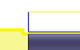

<div id="clearanceX"><p>輪郭の最も遠い切削を基準にした X 軸クリアランス距離。</p>
<table class="tipTable" cellspacing="10">
<tr>
<td><center></center></td>
<td><center></center></td>
</tr><tr>
<td><center><p><b>X 距離 0.030 インチ</b></p></center></td>
<td><center><p><b>X 距離 0.090 インチ</b></p></center></td>
</tr></table>
</div>